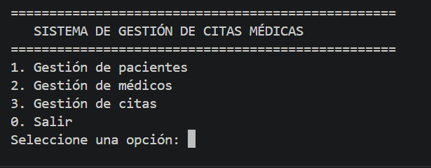
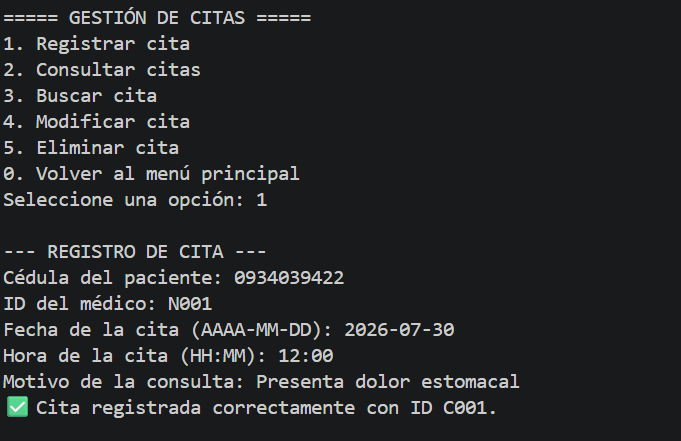
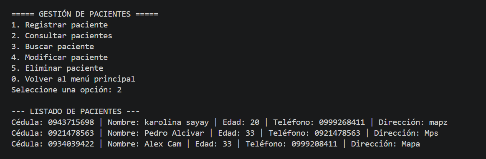

Proyecto
Sistema de Gestión de Citas Médicas
Aplicación de consola desarrollada en Python que permite a un centro de salud registrar pacientes y médicos, y administrar el ciclo completo de una cita: agendarla, consultarla, modificarla o cancelarla, todo con persistencia permanente en archivos.
- Karolina Sayay Análisis, clases y registro, Consultas y búsquedas
- Fernando Vasco Modificación, eliminación y archivos, Interfaz HTML y documentación
Objetivo
¿Para qué sirve el sistema?
Resolver, con las herramientas propias de Estructura de Datos —variables, condicionales, ciclos, funciones, listas, clases y objetos, y manejo de archivos— una necesidad real de cualquier consultorio: saber quién tiene cita, con quién, cuándo, y no perder esa información al cerrar el programa.
Descripción del problema
Muchos consultorios pequeños todavía agendan citas en papel o en hojas sueltas: los datos se traspapelan, no hay forma rápida de saber si un horario está libre, y modificar o cancelar una cita implica tachar y volver a escribir. El sistema traslada ese proceso a una aplicación que guarda todo en archivos, permite buscar en segundos y evita registros duplicados o incompletos.
Recorrido de una cita
Funcionalidades principales
-
01
Registrar pacientes y médicos
Se valida cédula, edad, teléfono y demás datos antes de guardarlos.
-
02
Agendar la cita
Relaciona un paciente existente con un médico existente, en fecha y hora válidas.
-
03
Consultar y buscar
Por cédula, nombre, fecha o médico, sobre pacientes, médicos o citas.
-
04
Modificar o cancelar
Cambia fecha, hora, motivo o estado sin perder el historial de la cita.
-
05
Persistir en archivos
Cada operación se guarda de inmediato en
datos/*.json.
Evidencia
Capturas del sistema en Python
Reemplaza los siguientes marcadores por capturas reales del
programa en ejecución (menú principal, registro de una cita y consulta de
citas), ubicándolas en html/imagenes/.



Tecnologías utilizadas
Conclusiones
Lo que deja el proyecto
El desarrollo del sistema permitió integrar, en un caso de uso concreto, los contenidos vistos durante el semestre: desde estructuras de control básicas hasta clases relacionadas entre sí y archivos como medio de persistencia. El resultado es una aplicación pequeña pero completa, capaz de sostener el trabajo diario de un consultorio sin depender de una base de datos externa.